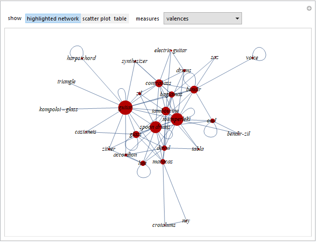

HCSL Publications
Networks
1. Chatzimichail C, Hatjimihail AT. Network of Musical Instruments for Rhythm Accompaniment. Wolfram Demonstrations Project, 2018.
Abstract
This Demonstration plots a network encoding musical instruments used for rhythm accompaniment. The data consists of 100 recordings of 21 popular songs of Smyrna in nine-beat rhythms. You can choose various measures. The results are also presented in tables and scatter plots.
Comment
The following musical instruments used for rhythm accompaniment were considered: guitar, toumperleki, spoon drums, bendir, baglamas, contrabass, oud, harpsichord, glass, zil, tambourine, lute, maracas, davul, saz, zither, bendir with zil, drums, castanets, accordion, kompoloi with a glass, synthesizer, tabla, crotalums, ney, electric guitar, and triangle, as well as the voice. The network encodes the use of these musical instruments in the recordings, either alone or in combination. Each vertex of the network represents an instrument. If an instrument was used alone, it is connected to itself with a loop. If it was used in combination with any other instruments, it is connected to each of them with an edge. The network is weighted. The weight of each loop or edge is the frequency of use for each instrument or combination of instruments in the recordings. The surface of each highlighted vertex is proportional to its respective measure. The calculated measures are the valences, the mean neighbor degrees, the degree centralities, the betweenness centralities, the closeness centralities, the eigenvector centralities and the page ranks.
To the best of our knowledge, this Demonstration presents a novel method for studying the characteristics of musical instruments.

Snapshot of the Demonstration
Demonstration at the Wolfram Demonstrations Project
Mathematica source code (Revised on 27/05/2018)